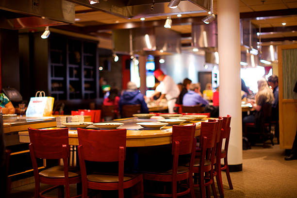
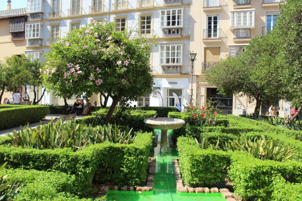
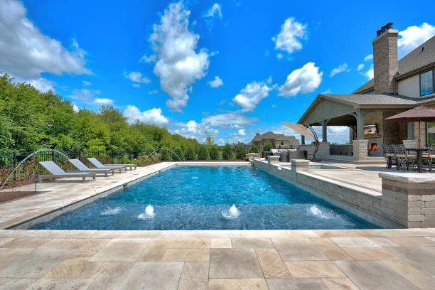
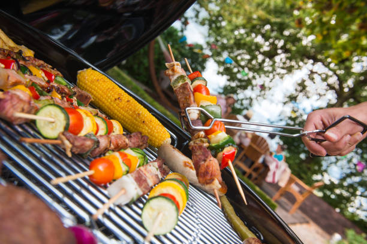

Standart Room
Hotel Arah Langkah
Welcome to Hotel Arah Langkah
Hotel Arah Langkah berjarak sekitar 20 menit dari Air Terjun Kakek Bodo. Dapat ditempuh 1 jam dari Bandara Internasional Juanda, Surabaya. Di Hotel Singgah Batu jua menyediakan layanan antar-jemput dengan biaya tambahan.
Di dekat hotel juga terdapat tempat berkemah, serta jalur sepeda gunung. Di Hotel Singgah Batu juga menyediakan fasilitas Barbequ dan penyewaan kendaraan. Resepsionis 24 jam sehingga dapat membantu anda.

View Outdor
Hotel Arah Langkah
Fasilitas paling populer di Hotel Arah Langkah
1. Wifi gratis di semua kamar
2. Fasilitas BBQ
3. Kolam renang
4. Penyewaan kendaraan
5. Restoran



